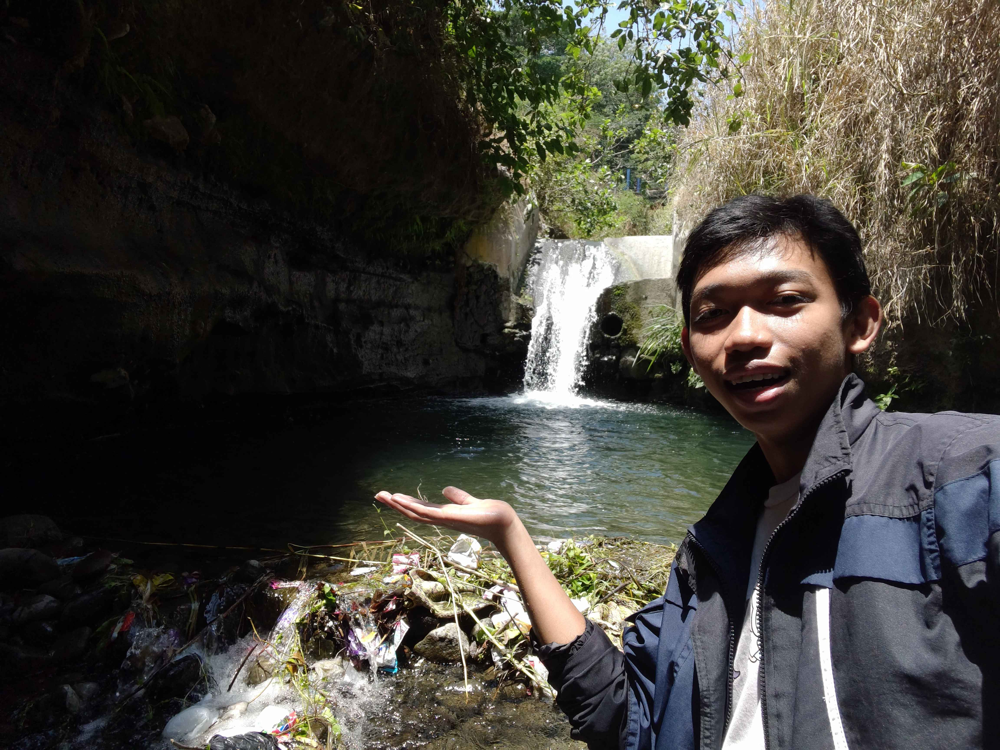

Perkenalkan, nama saya Jayindra Kaka Atmaja. Saya seorang siswa yang mengambil jurusan Pengembangan Perangkat Lunak dan Gim di SMK Negeri 2 Klaten. Saya lahir di Klaten, Jawa Tengah. Yang memiliki minat pada pengembangan web. Berpengalaman melalui studi kasus dan private projects sebagai Web Developer dengan spesialisasi pada pengembangan web aplikasi interaktif. Mampu dalam mengelola database MySQL, mengoptimalkan UI yang dibuat responsif, serta terbiasa menggunakan Github dalam kolaborasi. Senang bisa berkenalan dengan Anda.

Siap sedia berbagai jenis projek